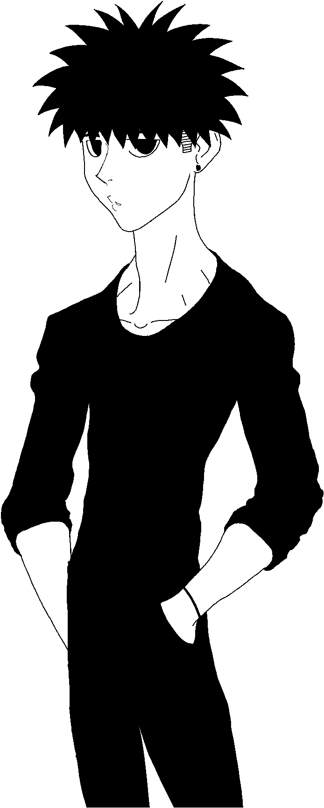

Hello my name is David G.
most just call me daveI'm an
artist
musician
animator
character designer
graphic and motion designereditor
and sound artist. For most of my life i have been dabbling in creative work and have studied and worked in many design languages. I have always loved to create and doing in so I have picked up a set of skills that allow me to do so in almost every avenue. In terms of passion i mainly align towards Y2K (late 90s - early 2000s) styled visuals, and classic dance music genres like Jungle, Drum n' Bass, and UK Garage.